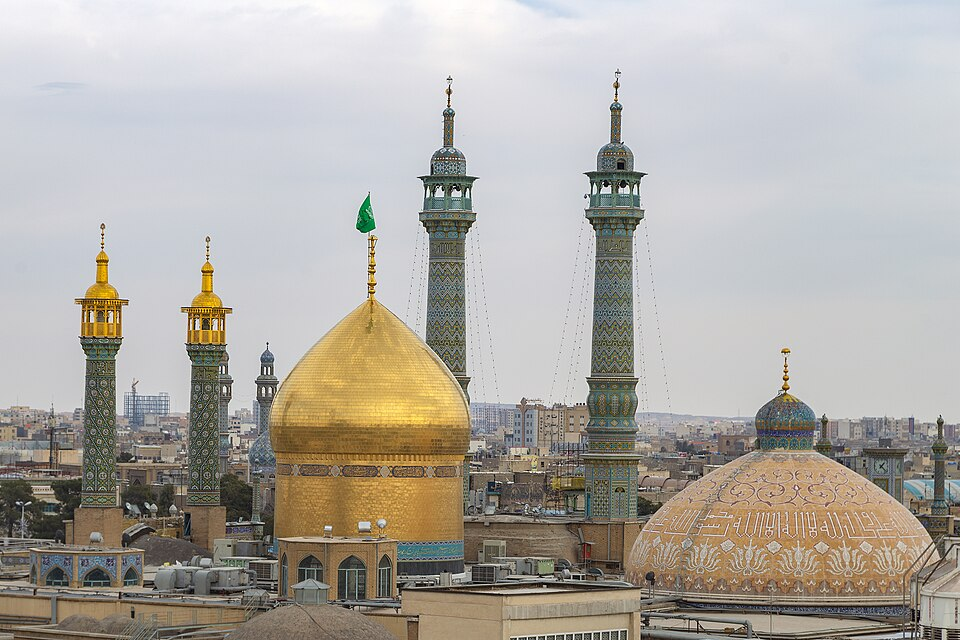

قُم (کُم، پارسی میانه: کُنب) مرکز استان قم و شهرستان قم است. این شهر هفتمین کلانشهر پرجمعیت ایران، و هشتمین شهر بزرگ و وسیع ایران است. قم در مرکز ایران و حاشیه دشت قم واقع شده است. رودخانه قمرود از وسط شهر عبور میکند. جمعیت قم طبق سرشماری ۱۳۹۵، ۱٬۲۰۱٬۱۵۸ نفر بوده و بر این اساس هفتمین کلانشهر ایران است. بر مبنای آخرین دادههای جغرافیایی، طول شهر قم حدوداً ۲۸ کیلومتر و مساحت آن ۱۲۰ کیلومتر مربع میباشد.
